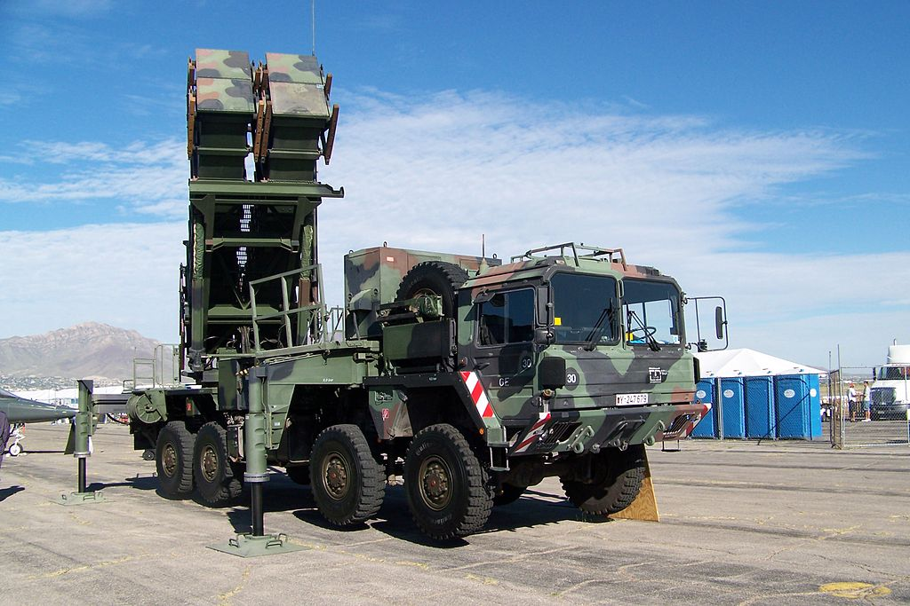
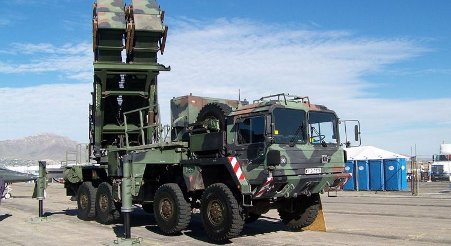

United Nations Welcomes Houthis’ Ceasefire Proposal in Yemen

Yemeni Houthis have offered to halt all attacks against Saudi Arabia if Saudi Arabia stops its attacks and the coalition it leads.The United Nations Special Envoy for Yemen welcomed the proposal, and described it as a first step towards ending the six-year war in Yemen.'This proposal could send a powerful message of the will to end the war,' Special Envoy for Yemen Martin Griffiths said on Saturday.
The Houthi ceasefire offer comes exactly a week after the UAV and missile attacks on Saudi Aramco oil facilities.The Houthis claimed responsibility for the attacks, but neither Saudi Arabia, nor its main ally, the United States, believe their claim is credible.They claim the evidence shows that the attacks were carried out by Iran.Tehran has strongly denied the allegation.
The Yemeni Civil War has so far left more than 91,600 dead, and has left millions of Yemenis facing famine and extreme hunger, causing a humanitarian catastrophe.Saudi Arabia and its coalition of several Middle Eastern countries have launched a military offensive against the Houthis since the fall of Yemeni President Abdrabbuh Mansur Hadi.
The Houthis, taking control of Sanaa from the north to the south, today marked the fifth anniversary of the 'conquest of the capital,' with thousands of supporters in central Sanaa.In response to the Saudi coalition attacks, the Houthis have repeatedly targeted missiles, rockets, and UAVs on Saudi soil.
In a televised address, Mahdi al-Mashat, chairman of the Houthi Supreme Political Council, said the group was ready to halt all attacks against Saudi Arabia if Saudi Arabia and its allies did so.Mr. Mashat urged all groups in Yemen to come together for national unity, though he said, 'we reserve the right to respond if our proposal is ignored.'
Today, the UN Special Representative for Yemen, Martin Griffiths, also welcomed the Houthis’ proposal, assessing it as a potential step towards ending the Yemeni six-year war and emphasizing that the opportunity should be seized and taken to move on to the next necessary steps.Because of the decline in violence, it has benefited from the escalation of military tensions and non-constructive statements.The United Nations welcomed the Houthis’ proposal.
Meanwhile, Saudi Foreign Minister Adel al-Jubair once again promised the results of the investigation about Iranian weapons used in the Aramco attacks Saturday would be published soon.Speaking to reporters in Riyadh on Saturday, Mr. Jabir emphasized that the Saudi government is coordinating and consulting with its allies and will take 'necessary action' once the outcome of the investigation is determined.'The Kingdom will take the appropriate measures based on the results of the investigation, to ensure its security and stability,' he said.
The United States, along with Saudi Arabia, claims to have evidence that attacks on the Aramco oilfields originated in southern Iran.On Friday, the United States announced the deployment of advanced equipment and equipment to Saudi Arabia to strengthen its anti-aircraft and missile defense systems.The move has been interpreted by moderates as a reaction from the White House.At the same time, Hossein Salami, an Iranian Revolutionary Guards commander, warned on Saturday that any conflict would come with a resolute Iranian response, and Tehran would not limit itself to a geographical front.
[bsa_pro_ad_space id=4]
Share on Facebook Tweet Follow us
Posted On: 2019-09-22T00:00:00
Posted By: Benedict Kasigara




Content Date: 2019-09-22
Download Date: 2021-07-09
Document ID: L0C04EU28